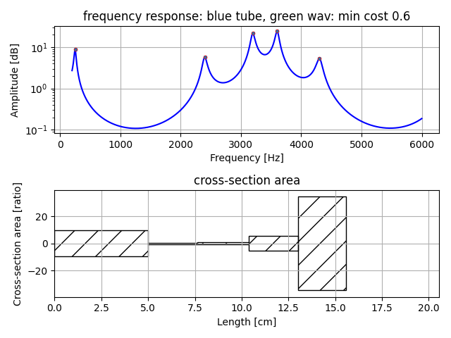
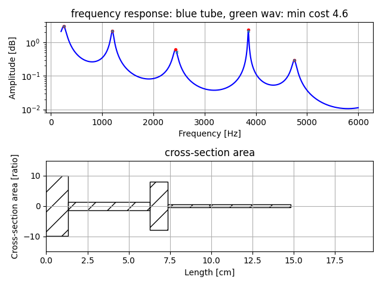
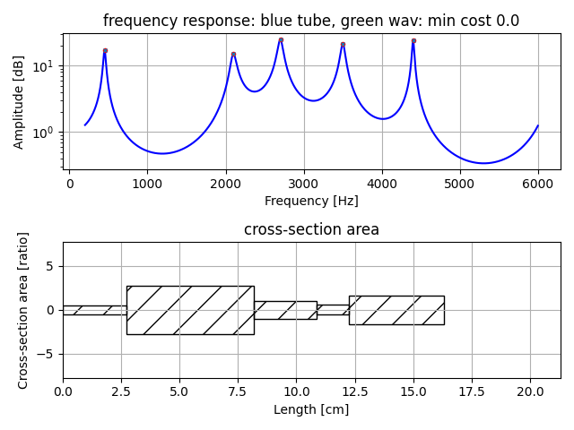
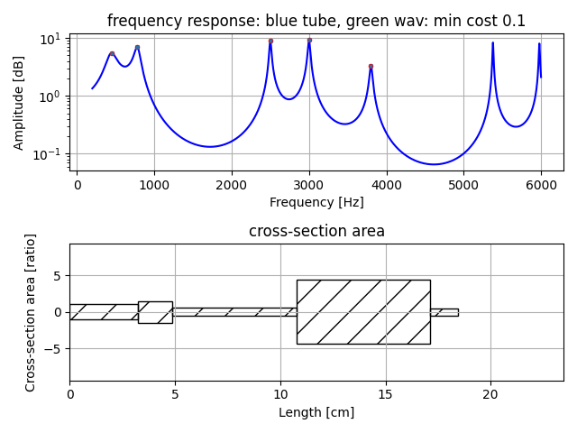

Vocal Tube Estimation 2
Estimation of five tube model from peak frequency.
This version uses peak frequency ratio instead of absolute value.
Estimation of five tube model is more difficult than estimation of 4 or less tube mode.
usage
make precomputed data of grid search to set initial value of downhill simplex method to estimate tube area and tube length.
python pre_compute5.py -t 5
It will save pks_dpks_stack_tube_use_ratio5.npz. Computing time will take several hours.
estimate five tube model from peak frequency.
python pks2tube5.py --peaks [list of peak frequency]
Number of elements in [list of peak frequency] is 5 as same as number of tube.
It will show an example of tube area and tube length.
In frequency response figure, cyan x mark means target peak frequency, and red dot mark means estimation result. They may differ some. 'min cost' means average of their difference.
Example 1:
python pks2tube5.py --peaks 750 1150 2800 3250 3950

Example 2:
python pks2tube5.py --peaks 250 2400 3200 3600 4300

Example 3:
python pks2tube5.py --peaks 250 1200 2450 3850 4750

Example 4:
python pks2tube5.py --peaks 450 2100 2700 3500 4400

Example 5:
python pks2tube5.py --peaks 450 780 2500 3000 3800

Note
This method estimation result is not always correct for human vocal tract,
because there are multiple solutions, combination of tube length and tube area, which meet the peak conditions.
It may needs to evaluate whether it's reasonable for human vocal tract.
License
MIT